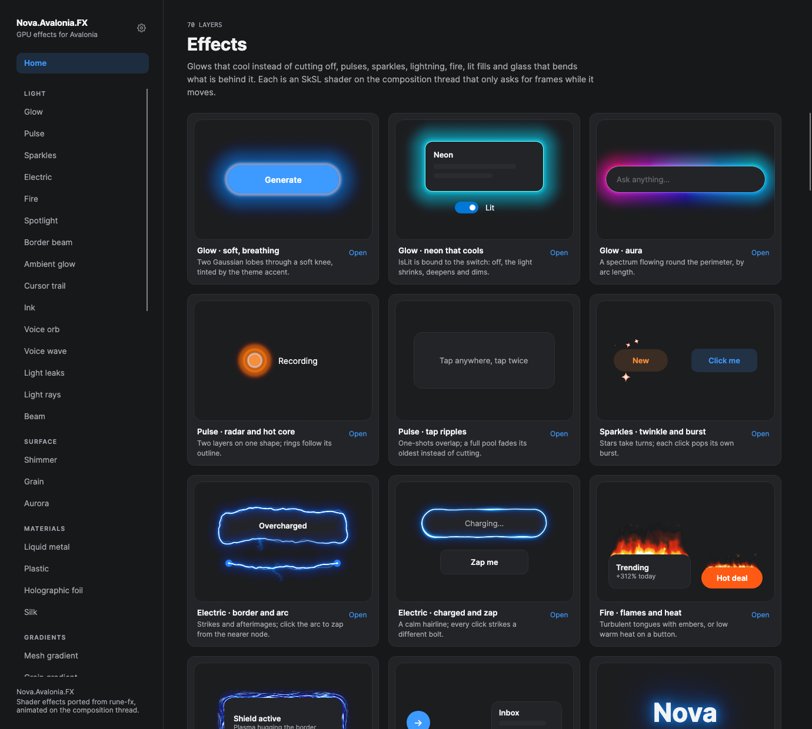

Welcome to Nova.Avalonia.FX
Nova.Avalonia.FX is a library of 70 GPU effect layers for Avalonia UI 12: glows, pulses, sparkles, lightning, fire, liquid metal and other animated fills, glass and distortions, show and hide transitions, outlines and inner shadows, beams, ink, and animated backgrounds. Wrap any control in an FXHost, add layers, and they draw under or over it, following its bounds and corner radius.
Each layer is an SkSL shader that runs on the composition render thread, and it only asks for frames while something actually moves, so an idle layer costs nothing. The math is ported from rune's rune-fx, and so are its rules: every frame is a pure function of time, speed changes never jump, one-shots overlap, and every layer has a reduced-motion pose.
The library is in preview (0.1.0-preview.1), and the API may still change.

Try every effect in the WebAssembly gallery
Get started
- Getting Started installs the package and puts a first layer on a control.
- Layers and hosts explains how layers stack and the properties every layer shares.
- Gallery shows how to run the gallery on the desktop and in the browser.
Overview
The effects are grouped as they are in the gallery.
Light
- Glow: Bloom around the shape: soft, neon with a white-hot rim, or an aura flowing around the border. Lights cool instead of cutting off.
- Pulse: Radar rings, a breathing halo, a heartbeat, tap ripples, or a ping that flies to a destination.
- Sparkles: Four-point stars twinkling around the shape, or a one-shot burst that pops them all.
- Electric: Lightning between two points or around the border, with forks and afterimages; or a calm charged hairline.
- Fire: Flames off the top edge with embers, warm heat for UI, plasma hugging the border, or simulated fire and smoke.
- Spotlight: A soft light that follows the pointer across the shape and lights the border near it.
- Border beam: Streaks of light running around the border, from a bright head to the tail color.
- Ambient glow: A glow in the content's own colors, blurred and spread out behind it.
- Trail: A cursor trail: a glowing ribbon or a stream of sparks following the pointer.
- Ink: Colored fluid that follows the pointer, swirls, and splashes where it is pressed.
- Voice orb: A living orb of color for voice input; it swells and ripples with Level.
- Voice wave: Glowing waves that swell with Level, for voice input.
- Light leaks: Warm film light drifting in over the edges, breathing in and out.
- Light rays: Shafts of light falling across from a source just outside, shimmering slowly.
- Beam: Light traveling along a curve between two points or two controls, like data flowing.
Surface
- Shimmer: A sheen sweeping across the shape, for skeleton loaders and busy states.
- Grain: Film grain inside the shape, static or animated at a set frame rate.
- Aurora: Three light curtains drifting across the shape, with bright hems and noise rays.
Materials
- Liquid metal: Polished metal reflecting a studio, with a rolled rim and a slowly flowing surface. Chrome, gold, rose or gunmetal.
- Plastic: A lit plastic slab, glossy or matte, domed or dished like a keycap.
- Holo foil: Holographic foil: an iridescent sheen that shifts with the pointer, with etched lines, glitter and glare.
- Silk: Soft satin folds that flow slowly, with a sheen along their ridges.
Gradients
- Mesh gradient: Up to six colors on slowly drifting points, blended in OKLab.
- Grain gradient: A gradient whose colors stipple into each other through film grain.
- Swirl: Colors stirred into a slow swirl: ink in water, or marble.
- Waves: Layered bands with rolling crests, like a sea or dunes.
Patterns
- Voronoi: Cells around slowly orbiting points, with seams: tiles or stained glass.
- Metaballs: Glossy blobs that drift and merge, like a lava lamp.
- Dither: A tone quantized into a few colors in square pixels: Bayer, blue noise or white noise.
- Halftone: Print-style dots on a rotated screen, sized by a tone.
- ASCII: Redraws what is behind it as text characters, by brightness.
Color
- Color filter: Grayscale, sepia, saturation, hue, brightness, contrast, tint, duotone, invert: CSS filters, live.
Shape
- Outline: A stroke of an exact width around the content's own shape: text, icons, stickers.
- Inner shadow: Light and shade inside the content's own shape: inset, emboss or letterpress.
Glass
- Glass: A pane of liquid glass: a refracting beveled rim, frost, a specular edge and a soft shadow.
- Fluted glass: Reeded glass: parallel ribs that squeeze and flip what is behind them.
- Magnifier: A glass loupe that follows the pointer and magnifies what is under it.
- Progressive blur: What is behind goes from sharp to fully blurred toward one edge, like a header over a scrolling list.
- Frost: Ice creeps in from the edges in crystal branches, frosting what is under it; it melts around the pointer.
- Rain glass: Rain on glass: drops bead and slide down a misted pane, each a small lens bending what is behind.
- Water: The content under a water surface: the pointer drags ripples across it and a press makes a splash.
Distort
- Heat haze: Hot air that makes what is behind it wobble: above a flame, or over the whole shape.
- Shockwave: A ring that bends what is behind it as it spreads from a tap. Shots overlap.
- CRT: An old tube: bulge, scanlines, color split, grille, glow, a rolling bar and a vignette.
- Chroma split: Red and blue pulled apart from green, with optional glitch slices.
- Glitch: Bands of the content tear sideways, colors split and rows flash: a burst on demand, or now and then.
- Old film: Sepia, grain, flicker, scratches and dust over what is behind it.
- Jelly: Pressed, the element squashes and wobbles like jelly before settling.
Moments
- Confetti: Paper pieces that fly, tumble and fall: a burst, two cannons or a gentle fall.
- Fireworks: Rockets that climb and burst into streaking, falling, crackling sparks.
- Liquid progress: A liquid filling the shape to a level, with waves and bubbles; a change of level sloshes.
- Reveal: Shows or hides the content: dissolve, burn, pixelate, iris, wipe, melt, clock, diamonds, swirl, halftone or generate.
- Spoiler: Hides content under shimmering dust, a mosaic or a solid cover until it is tapped.
- Motion blur: A smear of the content along its motion, behind it, while the host moves.
- Shatter: The content breaks into glass shards or blows away as dust, and comes back together to show.
- Genie: The content is pulled into a point, like a window minimizing into the dock, and pours back out.
- Page peel: Hovered, a corner curls up and shows the back, like a sticker or a page.
Depth
- Tilt: The content leans toward the pointer in 3D, with a glare that follows it.
- Pointer shadow: The pointer is a light: the content casts a soft shadow away from it.
Backgrounds
- Retro grid: A synthwave floor of glowing lines running to a horizon, under a gradient sky and a striped sun.
- Starfield: Twinkling stars in three depths, shooting stars, or warp streaks rushing from the center.
- Dot grid: A grid of dots that flicker at random, light up around the pointer and ripple when pressed.
- Weather: Rain streaks or snowflakes falling in three depths, slanted by the wind.
- Caustics: The shifting web of light water throws on a pool floor, with an optional color split.
- Bokeh: Soft out-of-focus lights drifting at three depths, with brighter rims like a real lens.
- Code rain: Columns of glyphs rain down a terminal-style background, bright at the head.
- Particle network: Drifting dots joined by lines when close; the pointer joins in.
- Topography: Contour lines of a slowly shifting landscape, like a map.
- Fog: Banks of mist drifting across, thickest at the bottom.
- Beams: Shafts of light drifting slowly sideways, with light falling down them.
Requirements
- Avalonia 12.1.5 or later in the Avalonia 12 release line, with the Skia renderer, which is the default.
- .NET 8 or later.
- The desktop, or the browser through WebAssembly, where the layers draw with WebGL.
On another rendering backend, layers draw nothing rather than fail.